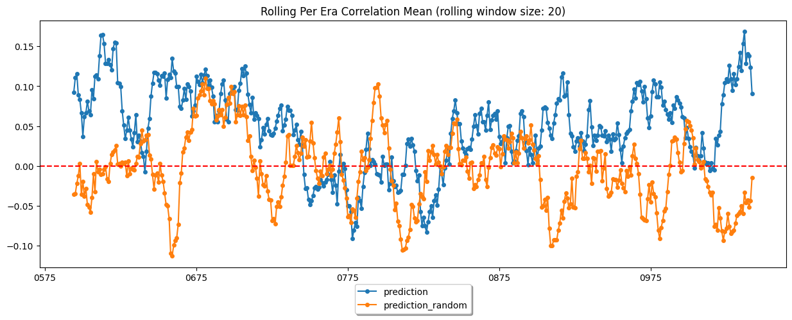
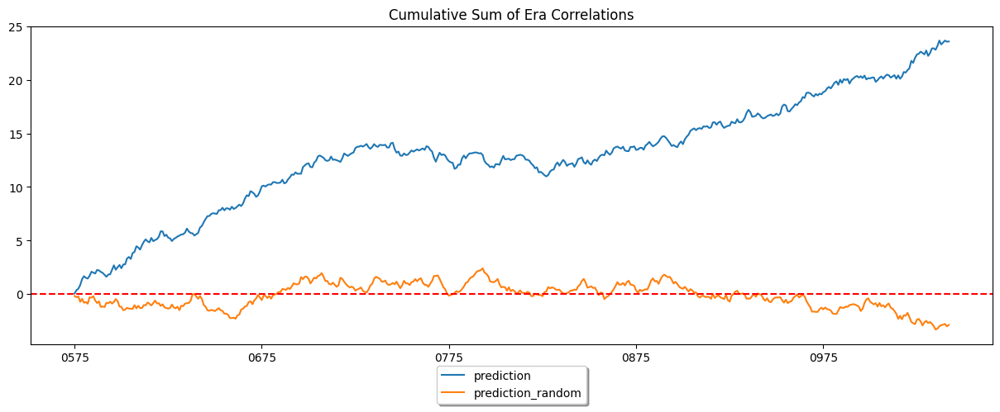

from numerblox.download import NumeraiClassicDownloader
directory = "eval_test_1234321/"
downloader = NumeraiClassicDownloader(directory_path=directory)No existing directory found at 'eval_test_1234321'. Creating directory...This section provides evaluation schemes for both Numerai Classic and Signals. The Evaluator takes a NumerFrame as input and returns a Pandas DataFrame containing metrics for each given prediction column.
BaseEvaluator implements all the evaluation logic that is common for Numerai Classic and Signals. This includes: - Mean, Standard Deviation and Sharpe for era returns. - Max drawdown - Annual Percentage Yield (APY) - Correlation with example predictions - Max feature exposure - Feature Neutral Mean (FNC), Standard deviation and Sharpe - Exposure Dissimilarity - Mean, Standard Deviation and Sharpe for TB200 (Buy top 200 stocks and sell bottom 200 stocks). - Mean, Standard Deviation and Sharpe for TB500 (Buy top 500 stocks and sell bottom 500 stocks).
BaseEvaluator (era_col:str='era', fast_mode=False)
Evaluation functionality that is relevant for both Numerai Classic and Numerai Signals.
:param era_col: Column name pointing to eras.
Most commonly “era” for Numerai Classic and “friday_date” for Numerai Signals.
:param fast_mode: Will skip compute intensive metrics if set to True, namely max_exposure, feature neutral mean, TB200 and TB500.
Note that we calculate the sample standard deviation with ddof=0. It may differ slightly from the standard Pandas calculation, but is consistent with how NumPy computes standard deviation. More info: https://stackoverflow.com/questions/24984178/different-std-in-pandas-vs-numpy
NumeraiClassicEvaluator extends the base evaluation scheme with metrics specific to Numerai Classic.
Additional metrics specific to Numerai are:
NumeraiClassicEvaluator (era_col:str='era', fast_mode=False)
Evaluator for all metrics that are relevant in Numerai Classic.
NumeraiSignalsEvaluator extends the base evaluation scheme with metrics specific to Numerai Signals.
NumeraiSignalsEvaluator (era_col:str='friday_date', fast_mode=False)
Evaluator for all metrics that are relevant in Numerai Signals.
We will test NumeraiClassicEvaluator on version 3 evaluation data with example predictions. The baseline reference (example_col) will be random predictions.
from numerblox.download import NumeraiClassicDownloader
directory = "eval_test_1234321/"
downloader = NumeraiClassicDownloader(directory_path=directory)No existing directory found at 'eval_test_1234321'. Creating directory...downloader.download_single_dataset(filename="v4.1/validation.parquet",
dest_path=directory + "validation.parquet")
downloader.download_single_dataset(filename="v4.1/validation_example_preds.parquet",
dest_path=directory + "validation_example_preds.parquet")No existing directory found at 'eval_test_1234321'. Creating directory...
📁 Downloading 'v4.1/validation.parquet' 📁
2023-01-31 17:36:50,161 INFO numerapi.utils: starting download
eval_test_1234321/validation.parquet: 1.51GB [01:02, 24.2MB/s] 📁 Downloading 'v4.1/validation_example_preds.parquet' 📁
2023-01-31 17:37:53,094 INFO numerapi.utils: starting download
eval_test_1234321/validation_example_preds.parquet: 56.9MB [00:02, 27.4MB/s] np.random.seed(1234)
test_dataf = create_numerframe(directory + "validation.parquet")
example_preds = pd.read_parquet(directory + "validation_example_preds.parquet")
test_dataf = test_dataf.merge(example_preds, on="id", how="left").reset_index()
test_dataf = test_dataf.sample(10_000)
test_dataf.loc[:, "prediction_random"] = np.random.uniform(size=len(test_dataf))
test_dataf.head(2)| id | era | data_type | feature_honoured_observational_balaamite | feature_polaroid_vadose_quinze | feature_untidy_withdrawn_bargeman | feature_genuine_kyphotic_trehala | feature_unenthralled_sportful_schoolhouse | feature_divulsive_explanatory_ideologue | feature_ichthyotic_roofed_yeshiva | ... | target_george_v4_20 | target_george_v4_60 | target_william_v4_20 | target_william_v4_60 | target_arthur_v4_20 | target_arthur_v4_60 | target_thomas_v4_20 | target_thomas_v4_60 | prediction | prediction_random | |
|---|---|---|---|---|---|---|---|---|---|---|---|---|---|---|---|---|---|---|---|---|---|
| 1830220 | n4958fe1e51ed7b1 | 0937 | validation | 0.5 | 0.25 | 0.5 | 0.0 | 0.5 | 0.0 | 0.50 | ... | 0.5 | 0.5 | 0.666667 | 0.500000 | 0.500000 | 0.500000 | 0.500000 | 0.333333 | 0.262811 | 0.246772 |
| 447082 | nff20d793aa8db78 | 0664 | validation | 0.0 | 0.00 | 1.0 | 0.0 | 0.0 | 1.0 | 0.25 | ... | 0.5 | 0.5 | 0.166667 | 0.166667 | 0.333333 | 0.333333 | 0.333333 | 0.166667 | 0.692049 | 0.385958 |
2 rows × 1620 columns
The Evaluator returns a Pandas DataFrame containing metrics for each prediction column defined. Note that any column can be used as example prediction. For practical use cases we recommend using proper example predictions (provided by Numerai) instead of random predictions.
fast_mode skips max. feature exposure, feature neutral mean, FNCv3, Exposure Dissimilarity, TB200 and TB500 calculations, which can take a while to compute on full Numerai datasets.
evaluator = NumeraiClassicEvaluator(fast_mode=True)
val_stats_fast = evaluator.full_evaluation(
dataf=test_dataf,
target_col="target",
pred_cols=["prediction", "prediction_random"],
example_col="prediction_random",
)
val_stats_fastUsing 'v4.1/features.json/medium' feature set to calculate FNC metrics.| target | mean | std | sharpe | max_drawdown | apy | corr_with_example_preds | |
|---|---|---|---|---|---|---|---|
| prediction | target | 0.050420 | 0.235582 | 0.214023 | -0.998109 | 155.074861 | 0.007460 |
| prediction_random | target | -0.006162 | 0.233542 | -0.026385 | -1.000000 | -62.819089 | 0.981837 |
The plot_correlations method will use matplotlib to plot per era correlation scores over time. The plots default to a rolling window of 20 eras in order to best align with repuation scores as measured on the Numerai leaderboards.
evaluator.plot_correlations(
test_dataf, pred_cols=["prediction", "prediction_random"], roll_mean=20
)

⚠ Deleting directory for 'NumeraiClassicDownloader' ⚠ Path: '/home/clepelaars/numerblox/nbs/eval_test_1234321'